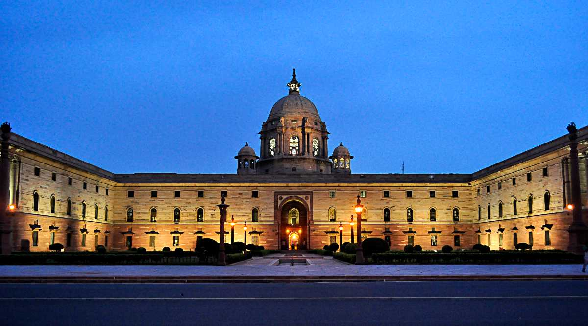
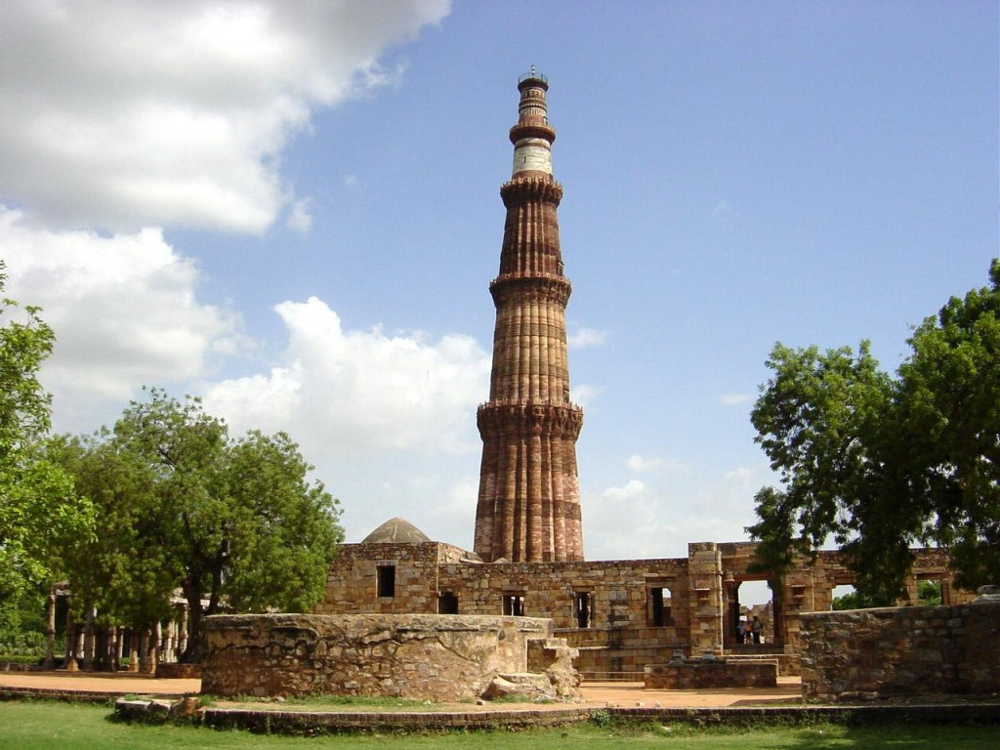
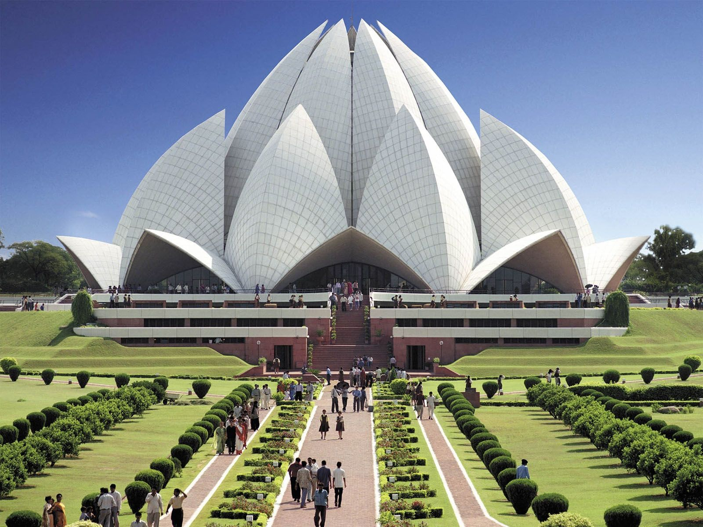
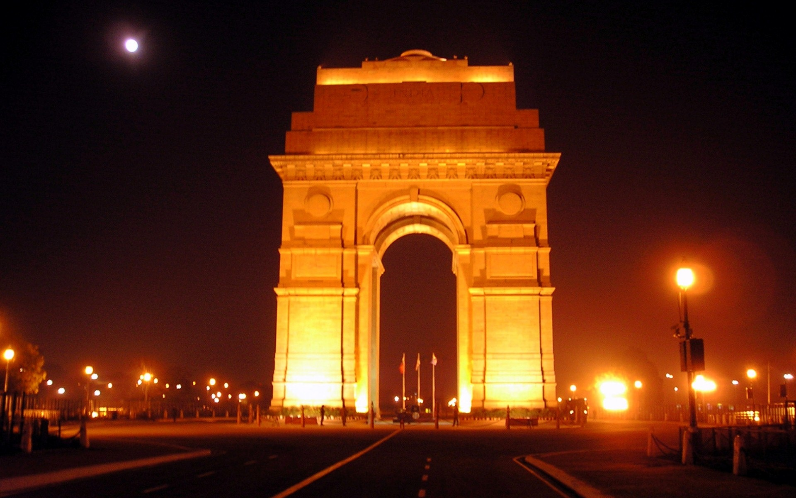

A historian's paradise, Delhi is home to a phase of history that speaks out from every nook and corner of the ancient city. The memories of the glorious age of the Mughal rulers is still alive in the city, with most of their architectural glories still standing as witnesses of the era gone by. One of these is the UNESCO World Heritage Site Red Fort or the Laal Quila.
One of the most symbolic features of the Indian capital. Built by the Mughal emperor Shah Jahan around 1638 and 1648, the Red Fort today is a busy market-place, a remembrance of Old Delhi. The Red Fort is also the site of India's national celebrations on the 15th of August, India's Independence Day.


Qutab Minar is a soaring, 73 m-high tower of victory, built in 1193 by Qutab-ud-din Aibak immediately after the defeat of Delhi's last Hindu kingdom. The tower has five distinct storeys, each marked by a projecting balcony and tapers from a 15 m diameter at the base to just 2.5 m at the top. The first three storeys are made of red sandstone; the fourth and fifth storeys are of marble and sandstone. At the foot of the tower is the Quwwat-ul-Islam Mosque, the first mosque to be built in India. An inscription over its eastern gate provocatively informs that it was built with material obtained from demolishing '27 Hindu temples'. A 7 m-high iron pillar stands in the courtyard of the mosque. It is said that if you can encircle it with your hands while standing with your back to it your wish will be fulfilled.
At the centre of New Delhi stands the 42 m high India Gate, an "Arc-de-Triomphe" like archway in the middle of a crossroad. Almost similar to its French counterpart, it commemorates the 70,000 Indian soldiers who lost their lives fighting for the British Army during the World War I. The memorial bears the names of more than 13,516 British and Indian soldiers killed in the Northwestern Frontier in the Afghan war of 1919.
The foundation stone of India Gate was laid by His Royal Highness, the Duke of Connaught in 1921 and it was designed by Edwin Lutyens. The monument was dedicated to the nation 10 years later by the then Viceroy, Lord Irwin. Another memorial, Amar Jawan Jyoti was added much later, after India got its independence. The eternal flame burns day and night under the arch to remind the nation of soldiers who laid down their lives in the Indo-Pakistan War of December 1971.


East of Nehru place, this temple is built in the shape of a lotus flower and is the last of seven Major Bahai's temples built around the world. Completed in1986 it is set among the lush green landscaped gardens.
The structure is made up of pure white marble The architect Furiburz Sabha chose the lotus as the symbol common to Hinduism, Buddhism,Jainism and Islam. Adherents of any faith are free to visit the temple and pray or meditate.Around the blooming petals there are nine pools of water, which light up, in natural light. It looks spectacular at dusk when it is flood lit.